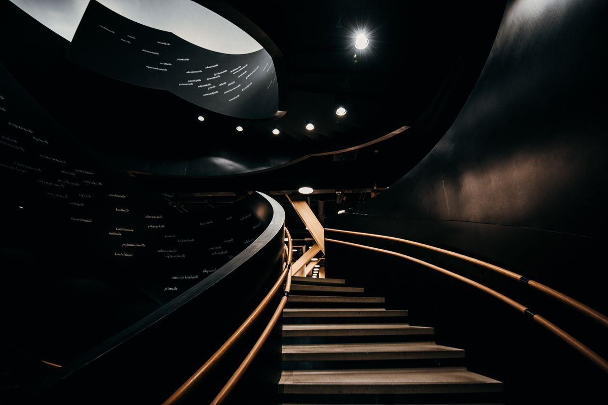

리뉴얼 — 홈페이지 리뉴얼
Renewal
Rebuild the structure, not just the skin — 구조·콘텐츠·문의 동선·검색과 AI 가독성까지 다시 점검합니다.
홈페이지는 있는데, 제 역할을 하지 못한다면. 회사와 서비스가 분명히 전달되는지, 모바일에서 쓰기 쉬운지, 고객 질문에 답하는지, 상담 경로가 이어지는지, 검색과 AI가 이해하는지. 이것부터 점검합니다.
자가 점검
지금 홈페이지에, 이런 문제가 있나요?
겉보기 디자인이 멀쩡해도 아래 항목이 여럿 겹친다면, 디자인 교체가 아니라 구조와 콘텐츠를 함께 점검할 때입니다.
구조 · 콘텐츠
- 검색 구조가 오래됨
- 지금의 검색·AI 환경 이전에 만들어진 구조
- 콘텐츠가 부족함
- 방문자가 확인하고 싶은 정보가 채워지지 않음
- 고객 질문에 답하지 못함
- 실제로 묻는 질문이 페이지에 없음
- 회사·서비스·사례·근거의 관계가 약함
- 정보가 흩어져 하나의 회사 이야기로 읽히지 않음
사용 · 운영
- AI가 이해하기 어려운 정보구조
- 주제와 관계가 드러나지 않는 페이지 구성
- 모바일·문의 동선 문제
- 모바일에서 쓰기 불편하고 문의 경로가 분명하지 않음
- 지속적인 콘텐츠 운영 부재
- 오픈 시점에 멈춰 회사의 현재와 어긋남
개수를 세어 몇 개 이상이면 리뉴얼이라는 식의 기준은 의미가 없습니다. 여러 신호가 겹친다면 구조와 콘텐츠를 함께 점검해 볼 필요가 있다는 뜻입니다.

문제는 화면만이 아니라,
화면 아래 구조까지
점검합니다.
리뉴얼 전, 하오웹이 실제로 확인하는 항목입니다. 항목마다 지금 무엇을 보는지와 리뉴얼이 바꾸는 방향을 함께 정리합니다. 검색엔진과 생성형 AI가 웹페이지의 회사·서비스·전문 정보를 수집·해석하는 환경이 중요해졌고, 많은 기존 홈페이지가 이 변화 이전에 만들어졌습니다.
BEFORE / AFTER
그래서, 무엇이 달라지나요.
제조업 기업을 예로 든 가상의 구조입니다. 실제 고객사가 아니며, 화면 대신 정보구조가 어떻게 달라지는지만 정리했습니다.
BEFORE DEMO
- 서비스가 무엇인지, 서로 어떤 관계인지 메뉴에서 드러나지 않습니다.
- 제품이 한 페이지에 묶여 있어 제품마다 찾아 들어올 주소가 없습니다.
- 고객이 실제로 묻는 질문에 답하는 페이지가 없습니다.
- 사례와 근거가 서비스와 연결되지 않습니다.
- 문의가 CONTACT 안에만 있어 전환 경로가 깁니다.
AFTER DEMO
- 서비스별로 독립된 페이지가 생깁니다.
- 제품·적용 분야마다 찾아 들어올 주소가 늘어납니다.
- 고객 질문이 FAQ 로 페이지 안에 들어옵니다.
- 사례와 근거가 서비스에 연결됩니다.
- 문의가 모든 페이지에서 이어지고, 검색·AI 가 관계를 읽을 수 있습니다.
사람에게는 더 이해하기 쉬워지고, 검색에는 발견될 페이지가 명확해지고, AI에는 회사·서비스·사례·근거의 관계가 연결됩니다.
CHECK · REBUILD · GROW
진단하고, 다시 만들고, 쌓습니다.
진단·리뉴얼·검색과 AI 대응·콘텐츠 운영을 각각 고르실 필요는 없습니다. 리뉴얼은 이 세 단계로 이어집니다.
Rebuild
앞의 REBUILD 단계는 이렇게 진행됩니다. 무엇을 버리고 무엇을 살릴지 먼저 정하고, 디자인만이 아니라 구조와 콘텐츠를 다시 만듭니다.
현재 상태 진단
지금 홈페이지가 어떤 상태인지 항목별로 확인합니다.
유지·삭제·재작성 분류
기존 콘텐츠를 버릴 것과 살릴 것으로 나눕니다.
구조와 콘텐츠 재설계
방문자의 판단 순서로 사이트맵과 원고를 다시 만듭니다.
디자인과 개발, 오픈과 운영
제작 후 오픈하고, 오픈 이후 운영까지 이어갑니다.
범위와 가격 기준
견적이 달라지는 기준부터 공개합니다.
리뉴얼 비용은 페이지 수와 기능, 남길 콘텐츠와 새로 만들 콘텐츠의 양, 촬영·그래픽 포함 여부에 따라 다릅니다. 고정 금액표 대신 금액을 정하는 기준을 공개하고, 범위 확인 후 예상 견적을 드립니다.
페이지 수 · 필요한 기능 · 남길 콘텐츠와 새로 쓸 콘텐츠의 양 · 촬영과 그래픽 포함 여부.
진단으로 현재 상태를 확인하고 다시 만들 범위를 정한 뒤, 무료 제안 단계에서 예상 견적을 함께 안내합니다.
기존 콘텐츠 중 살릴 것은 살립니다. 처음부터 다 새로 만드는 것만이 리뉴얼은 아닙니다.
자주 묻는 질문
다시 만들었는데 마음에 안 들면 어쩌지.
리뉴얼에서 가장 자주 듣는 걱정입니다. 계약 후 사업과 고객을 분석해 서로 다른 3가지 디자인 방향을 제안하고, 고른 하나를 전체 홈페이지로 발전시킵니다.
구조와 신뢰를 앞세운 방향. 제품·기술 정보를 먼저 읽히게 하고 수치와 인증을 앞쪽에 둡니다.
문의로 이어지는 것을 앞세운 방향. 핵심 서비스와 결과를 위쪽에, 문의를 눈에 띄게 배치합니다.
브랜드 인상을 앞세운 방향. 큰 비주얼과 타이포로 첫인상을 만들고 정보는 아래에서 전개합니다.
계약 전 디자인 시안을 드리는 것이 아니고, 완성된 홈페이지를 3개 만드는 것도 아닙니다. 서로 다른 3가지 방향을 제안하고 고객이 하나를 고르는 방식입니다. 위 A·B·C 는 이해를 돕기 위한 예시이며, 실제로는 고객의 사업과 목적에 맞춰 새로 제안합니다.
무료 제안
리뉴얼 제안서에는 이것부터 담깁니다.
신규 제작과 기존 홈페이지 리뉴얼 모두 신청할 수 있습니다. 신청 내용을 확인한 뒤 사이트 구조·핵심 메시지·제작 범위·예상 견적을 정리해 드립니다.
지금 홈페이지에서 무엇이 문제인지, 어떤 항목을 개선해야 하는지 정리합니다.
권장 사이트맵과 핵심 메시지 방향, 콘텐츠·화면 구성 방향을 제안합니다.
제작 플랜과 범위 기준의 예상 견적, 검색·AI 개선 방향을 함께 정리합니다.